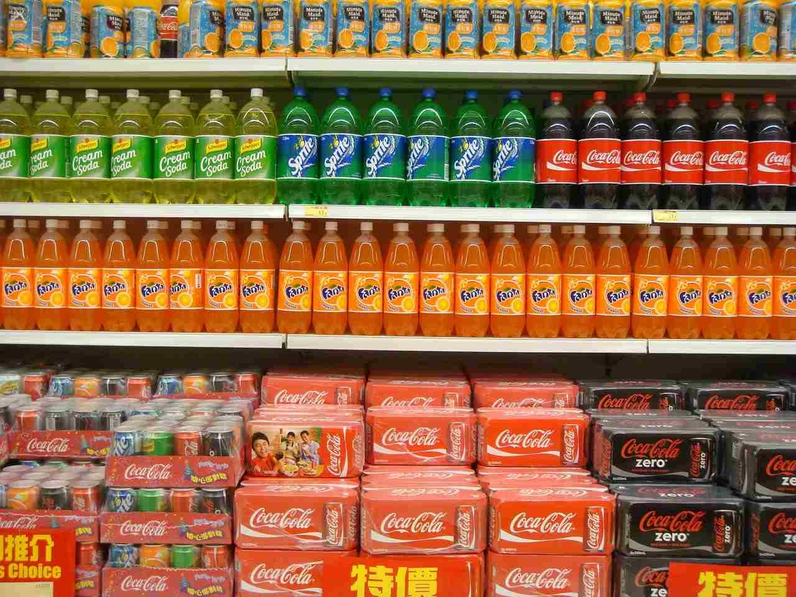

Nesta etapa são apresentados os contextos que cercam e possíveis cenários de aplicação que serão focados o projeto
Estar atento à falta de algo é sempre uma tarefa que exige recursos e velocidade para reabastecer o mais rápido possível, garantindo assim o funcionamento do sistema.
Sendo assim, sistemas que consigam informar a falta de algo são de extrema importância, seja num comércio onde produtos precisam ser reabastecidos ou num ambiente doméstico onde o prato para animais devem ser mantidos cheios.
Pensando nisso apresentamos dois possíveis cenários de aplicação
O primeiro deles, pensando num uso doméstico, realiza a identificação da quantidade de ração no prato do animal de estimação. Se quantidade estiver baixa, será possível visualizar o fundo do prato
O segundo cenário, em um ambiente de comércio, verifica a falta de algum produto na gôndola. Tendo uma mudança de coloração à medida que a profundidade do produto exposto aumenta, e, em casos extremos, será possível ver o fundo da gôndola
Ao se ajustarem as faixas de cores identificadas pelo programa, consegue-se abranger o monitoramento para diversas aplicações